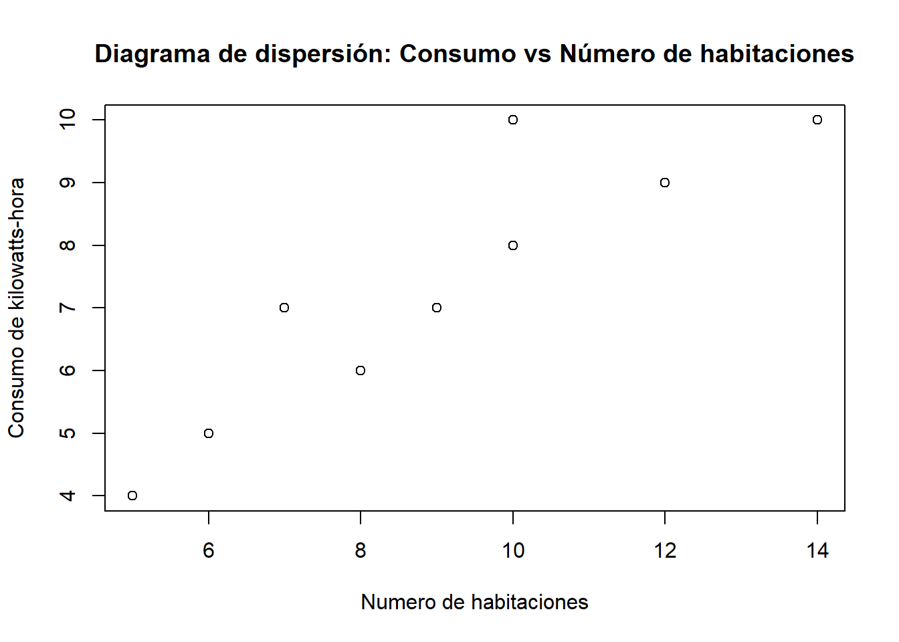
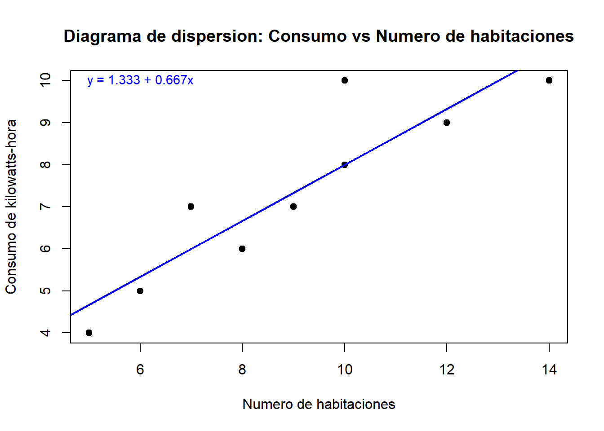
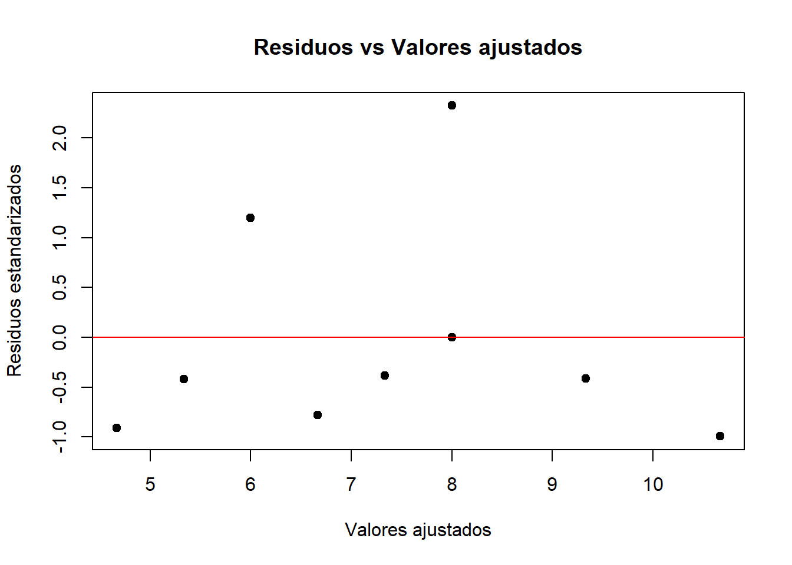
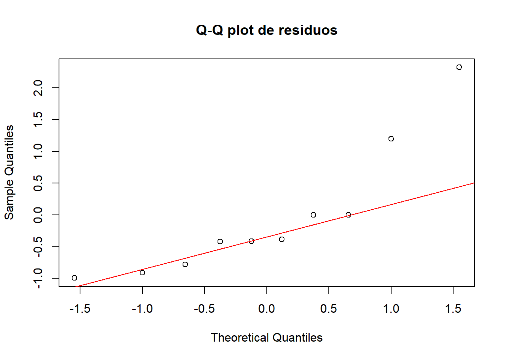

Datos del problema
library(readxl)
habitaciones <- read_excel("C:/Users/User/Downloads/habitaciones.xlsx")
colnames(habitaciones) <- c("Habitaciones", "Kilowatts_hora")
kable(habitaciones, caption = "Tabla 1. Datos de número de habitaciones y consumo de kilowatts-hora",
align = 'c') %>%
kable_styling(bootstrap_options = c("striped", "hover", "condensed", "responsive", "bordered"),
full_width = F,
position = "center")
Tabla 1. Datos de número de habitaciones y consumo de kilowatts-hora
|
Habitaciones
|
Kilowatts_hora
|
|
12
|
9
|
|
9
|
7
|
|
14
|
10
|
|
6
|
5
|
|
10
|
8
|
|
8
|
6
|
|
10
|
8
|
|
10
|
10
|
|
5
|
4
|
|
7
|
7
|
1. Contexto
Una empresa de servicios eléctricos realizó un estudio para analizar
el consumo de energía eléctrica en viviendas. Para ello, se consideraron
datos de 10 casas, registrando para cada una de ellas el número de
habitaciones y el consumo mensual de energía medido en miles de
kilowatts-hora. El propósito del estudio es describir y modelar la
relación existente entre estas dos variables mediante un modelo de
regresión lineal simple.
Variables del estudio
En este estudio se trabaja con dos variables cuantitativas que serán
analizadas mediante un modelo de regresión lineal simple, diferenciando
entre:
- Variable independiente (\(x\)): Número de
habitaciones.
- Variable dependiente (\(\hat{y}\)): Consumo de energía
eléctrica (en miles de kilowatts-hora).
El número de habitaciones se considera como variable independiente,
ya que es una característica propia de la vivienda que puede influir
sobre el consumo de energía, pero no depende de él. Por otro lado, el
consumo de energía eléctrica se considera como variable dependiente, ya
que puede variar en función de las características de la vivienda, entre
ellas, el número de habitaciones.
2. Diagrama de dispersión
Antes de ajustar el modelo de regresión, es importante realizar una
visualización inicial de los datos, ya que el diagrama de dispersión
permite explorar gráficamente la relación entre el número de
habitaciones y el consumo de energía eléctrica, identificar posibles
patrones de asociación, y evaluar la distribución general de los
datos.
plot(habitaciones$`Habitaciones`, habitaciones$`Kilowatts_hora`,
xlab = "Numero de habitaciones",
ylab = "Consumo de kilowatts-hora",
main = "Diagrama de dispersión: Consumo vs Número de habitaciones")

El diagrama de dispersión muestra una relación directa y positiva
entre el número de habitaciones y el consumo de energía eléctrica,
evidenciando que a medida que aumenta el número de habitaciones también
tiende a incrementarse el consumo, patrón que sugiere que un modelo de
regresión lineal simple podría describir adecuadamente esta asociación
al reflejar una tendencia aproximadamente lineal en los datos; además,
aunque se tienen diez observaciones, en el gráfico solo se aprecian
nueve puntos debido a que dos viviendas comparten exactamente el mismo
número de habitaciones y consumo, provocando una superposición en la
representación gráfica.
3. Ajuste del modelo de regresión
Una vez observada la posible relación lineal entre las variables, se
procede a ajustar un modelo de regresión lineal simple que permita
cuantificar la relación entre variables, este modelo busca encontrar una
recta que describa la relación entre el número de habitaciones y el
consumo de energía eléctrica, de manera que las diferencias entre los
valores observados y los valores predichos sean lo más pequeñas posibles
en promedio.
# Ajustar el modelo de regresión lineal simple
modelo <- lm(`Kilowatts_hora` ~ `Habitaciones`, data = habitaciones)
# Mostrar resumen del modelo
summary(modelo)
##
## Call:
## lm(formula = Kilowatts_hora ~ Habitaciones, data = habitaciones)
##
## Residuals:
## Min 1Q Median 3Q Max
## -0.6667 -0.5833 -0.3333 0.0000 2.0000
##
## Coefficients:
## Estimate Std. Error t value Pr(>|t|)
## (Intercept) 1.3333 1.0559 1.263 0.242227
## Habitaciones 0.6667 0.1116 5.973 0.000333 ***
## ---
## Signif. codes: 0 '***' 0.001 '**' 0.01 '*' 0.05 '.' 0.1 ' ' 1
##
## Residual standard error: 0.9129 on 8 degrees of freedom
## Multiple R-squared: 0.8168, Adjusted R-squared: 0.794
## F-statistic: 35.68 on 1 and 8 DF, p-value: 0.0003332
Después del ajuste del modelo de regresión lineal simple, se
procederá a presentar gráficamente la recta estimada sobre el diagrama
de dispersión. Esta línea recta refleja la relación entre el número de
habitaciones y el consumo de energía eléctrica, facilitando la
visualización del patrón general y mostrando cómo varía el consumo
estimado a medida que aumenta el número de habitaciones.
#Diagrama de dispersión
plot(habitaciones$`Habitaciones`, habitaciones$`Kilowatts_hora`,
xlab = "Numero de habitaciones",
ylab = "Consumo de kilowatts-hora",
main = "Diagrama de dispersión: Consumo vs Número de habitaciones",
pch = 19)
# Agregar la recta de regresión
abline(modelo, col = "blue", lwd = 2)
# Coeficientes
b0 <- round(coef(modelo)[1], 3)
b1 <- round(coef(modelo)[2], 3)
# Ecuación de la recta de regresión lineal
ecuacion <- paste0("y = ", b0, " + ", b1, "x")
# Agregar la ecuación en la gráfica
text(x = 6, y = 10, labels = ecuacion, col = "blue", cex = 0.9)

En el diagrama de dispersión se observa una recta de regresión con
pendiente positiva de aproximadamente 0,667 e intercepto de 1,333, lo
que confirma la existencia de una relación directa y creciente entre el
número de habitaciones y el consumo de energía eléctrica.
4. Interpretación de los parámetros de
regresión
# Parámetros del modelo
coeficientes <- coef(modelo)
# Tabla de parámetros
kable(as.data.frame(t(coeficientes)),
col.names = c("Intercepto (b0)", "Pendiente (b1)"),
caption = "Tabla 2. Coeficientes estimados del modelo de regresión") %>%
kable_styling(bootstrap_options = c("striped", "hover", "condensed", "responsive", "bordered"),
full_width = FALSE,
position = "center")
Tabla 2. Coeficientes estimados del modelo de regresión
|
Intercepto (b0)
|
Pendiente (b1)
|
|
1.333333
|
0.6666667
|
El parámetro de intercepto (\(b_0\))
indica que el consumo estimado de energía para una vivienda sin
habitaciones sería de aproximadamente 1,333 miles de kilowatts-hora,
mientras que la pendiente (\(b_1\))
señala que por cada habitación adicional, el consumo de energía
eléctrica aumenta 0,667 miles de kilowatts-hora.
5. Coeficiente de determinación y de
correlación
# Calcular coeficientes
correlacion <- cor(habitaciones$`Habitaciones`, habitaciones$`Kilowatts_hora`)
determinacion <- correlacion^2
# Mostrar resultados usando cat
cat("Coeficiente de correlación (r):", round(correlacion, 4), "\n")
## Coeficiente de correlación (r): 0.9038
cat("Coeficiente de determinación (R²):", round(determinacion, 4))
## Coeficiente de determinación (R²): 0.8168
El coeficiente de correlación obtenido es 0,9038, un valor positivo y
cercano a uno, lo que indica una relación directa y fuerte entre el
número de habitaciones y el consumo de energía eléctrica. Por otro lado,
el coeficiente de determinación es 0,8168, lo que significa que
aproximadamente el 81,68% de la variabilidad observada en el consumo
puede ser explicada a partir del número de habitaciones, respaldando el
buen ajuste del modelo de regresión lineal simple.
No obstante, para corroborar confirmar estadísticamente la existencia
de una relación lineal entre el número de habitaciones y el consumo de
energía eléctrica, se realiza una prueba de hipótesis sobre el
coeficiente de correlación de Pearson, teniendo como hipótesis las
siguintes:
Hipótesis nula (\(H_0\)): \(\rho = 0\)
(No existe correlación lineal entre el número de habitaciones y el
consumo de energía eléctrica).
Hipótesis alternativa (\(H_1\)):
\(\rho \neq 0\)
(Existe correlación lineal entre el número de habitaciones y el consumo
de energía eléctrica).
cor.test(habitaciones$`Habitaciones`, habitaciones$`Kilowatts_hora`)
##
## Pearson's product-moment correlation
##
## data: habitaciones$Habitaciones and habitaciones$Kilowatts_hora
## t = 5.9733, df = 8, p-value = 0.0003332
## alternative hypothesis: true correlation is not equal to 0
## 95 percent confidence interval:
## 0.6362086 0.9772915
## sample estimates:
## cor
## 0.9037974
La prueba de hipótesis para el coeficiente de correlación de Pearson
arroja un valor p de 0,0003332, el cual es significativamente menor al
nivel de significancia de 0,05, lo cual permite rechazar la hipótesis
nula (\(H_0: \rho = 0\)) y concluir que
existe una correlación lineal significativa entre el número de
habitaciones y el consumo de energía eléctrica.
6. Validación de los supuestos del modelo
Para asegurar que el modelo de regresión lineal simple es adecuado,
se validan los siguientes supuestos: normalidad de los residuos,
homocedasticidad (varianza constante) y ausencia de patrones
sistemáticos en los residuos.
6.1 Gráfico de residuos vs valores ajustados
residuos <- rstandard(modelo)
valores.ajustados <- fitted(modelo)
plot(valores.ajustados, residuos,
xlab = "Valores ajustados",
ylab = "Residuos estandarizados",
main = "Residuos vs Valores ajustados",
pch = 19)
abline(h = 0, col = "red")

El gráfico de residuos contra valores ajustados muestra que los residuos
se dispersan de manera aleatoria alrededor de la línea horizontal en
cero, sin seguir formas específicas ni agrupaciones, lo que sugiere que
el modelo cumple adecuadamente con el supuesto de homocedasticidad y
mantiene una relación lineal entre las variables.
6.2 Gráfico Q-Q de normalidad de residuos
qqnorm(residuos,
main = "Q-Q plot de residuos")
qqline(residuos, col = "red")

El gráfico Q-Q de residuos muestra que, aunque algunos puntos
cercanos al centro siguen la línea recta, se observan desviaciones
importantes en los extremos, esto sugiere que los residuos no siguen
completamente una distribución normal.
6.3 Prueba de normalidad de Shapiro-Wilk
Las hipótesis de la prueba de Shapiro-Wilk son:
- Hipótesis nula (\(H_0\)): Los
residuos siguen una distribución normal.
- Hipótesis alternativa (\(H_1\)):
Los residuos no siguen una distribución normal.
shapiro.test(resid(modelo))
##
## Shapiro-Wilk normality test
##
## data: resid(modelo)
## W = 0.76751, p-value = 0.005832
La prueba de Shapiro-Wilk arroja un valor p de 0,0058, el cual es
menor al nivel de significancia de 0,05, por que se rechaza la hipótesis
nula de normalidad, indicando que los residuos no siguen una
distribución normal y confirmando lo observado en la prueba
anterior.
6.4 Prueba de homocedasticidad de
Breusch-Pagan
Las hipótesis de la prueba de Breusch-Pagan son:
- Hipótesis nula (\(H_0\)): La
varianza de los residuos es constante (homocedasticidad).
- Hipótesis alternativa (\(H_1\)): La
varianza de los residuos no es constante (heterocedasticidad).
library(car)
# Prueba de homocedasticidad de Breusch-Pagan
ncvTest(modelo)
## Non-constant Variance Score Test
## Variance formula: ~ fitted.values
## Chisquare = 0.02989537, Df = 1, p = 0.86273
La prueba de Breusch-Pagan arroja un valor p de 0,8627, el cual es
mayor al nivel de significancia de 0,05, por lo que no se rechaza la
hipótesis nula de homocedasticidad, indicando que la varianza de los
residuos se puede considerar constante en el modelo de regresión.
7. Pruebas de significancia sobre los
parámetros
Para realizar las pruebas de hipótesis debemos recordar el resumen
del modelo:
# Mostrar resumen del modelo
summary(modelo)
##
## Call:
## lm(formula = Kilowatts_hora ~ Habitaciones, data = habitaciones)
##
## Residuals:
## Min 1Q Median 3Q Max
## -0.6667 -0.5833 -0.3333 0.0000 2.0000
##
## Coefficients:
## Estimate Std. Error t value Pr(>|t|)
## (Intercept) 1.3333 1.0559 1.263 0.242227
## Habitaciones 0.6667 0.1116 5.973 0.000333 ***
## ---
## Signif. codes: 0 '***' 0.001 '**' 0.01 '*' 0.05 '.' 0.1 ' ' 1
##
## Residual standard error: 0.9129 on 8 degrees of freedom
## Multiple R-squared: 0.8168, Adjusted R-squared: 0.794
## F-statistic: 35.68 on 1 and 8 DF, p-value: 0.0003332
Para el intercepto (\(b_0\)):
Hipótesis nula (\(H_0\)): \(\beta_0 = 0\)
(el consumo de energía es nulo cuando el número de habitaciones es
cero).
Hipótesis alternativa (\(H_1\)):
\(\beta_0 \neq 0\)
(el consumo de energía no es nulo cuando el número de habitaciones es
cero).
A partir de la salida del modelo, se observa que el valor p asociado
al intercepto es 0,242, el cual es mayor al nivel de significancia de
0,05.
Por lo tanto, no se rechaza la hipótesis nula, lo que indica que no hay
evidencia estadística suficiente para afirmar que el consumo de energía
sea diferente de cero cuando no hay habitaciones.
Para el intercepto (\(b_1\)):
Hipótesis nula (\(H_0\)): \(\beta_1 = 0\)
(el número de habitaciones no tiene efecto sobre el consumo de
energía).
Hipótesis alternativa (\(H_1\)):
\(\beta_1 \neq 0\)
(el número de habitaciones sí tiene efecto sobre el consumo de
energía).
A partir de la salida del modelo, se observa que el valor p asociado
a la pendiente es 0,0003332, el cual es menor al nivel de significancia
de 0,05, por lo que, se rechaza la hipótesis nula, concluyendo que
existe evidencia estadísticamente significativa de que el número de
habitaciones influye en el consumo de energía eléctrica.
8. Tabla de ANOVA
## Analysis of Variance Table
##
## Response: Kilowatts_hora
## Df Sum Sq Mean Sq F value Pr(>F)
## Habitaciones 1 29.7333 29.7333 35.68 0.0003332 ***
## Residuals 8 6.6667 0.8333
## ---
## Signif. codes: 0 '***' 0.001 '**' 0.01 '*' 0.05 '.' 0.1 ' ' 1
La tabla ANOVA correspondiente al modelo de regresión muestra un
valor de F igual a 35,68, con 1 grado de libertad para el modelo y 8
grados de libertad para el error. El valor p asociado a esta prueba es
0,0003332, que resulta ser mucho menor al nivel de significancia de
0,05.
En este contexto, las hipótesis que se plantean son las
siguientes:
- Hipótesis nula (\(H_0\)): el modelo
de regresión no explica mejor la variabilidad en el consumo de energía
que un modelo sin variables predictoras, es decir, la pendiente (\(\beta_1\)) es igual a cero.
- Hipótesis alternativa (\(H_1\)): el
modelo de regresión explica significativamente la variabilidad en el
consumo de energía, es decir, la pendiente (\(\beta_1\)) es diferente de cero.
Dado que el valor p es menor que 0,05, se rechaza la hipótesis nula
(\(H_0\)) y se concluye que el modelo
de regresión lineal es significativo, lo cual indica que el número de
habitaciones tiene un efecto estadísticamente significativo sobre el
consumo de energía eléctrica, y por lo tanto, el modelo explica de
manera adecuada parte importante de la variabilidad de la variable que
se busca interpretar.
LS0tDQp0aXRsZTogIkRlc2NyaXBjacOzbiBpbmljaWFsIGRlbCBtb2RlbG8gZGUgcmVncmVzacOzbiBsaW5lYWwiDQpvdXRwdXQ6DQogIGh0bWxfZG9jdW1lbnQ6DQogICAgdG9jOiB0cnVlDQogICAgdG9jX2Zsb2F0Og0KICAgICAgY29sbGFwc2VkOiB0cnVlDQogICAgICBzbW9vdGhfc2Nyb2xsOiB0cnVlDQogICAgY29kZV9kb3dubG9hZDogdHJ1ZQ0KICAgIHRoZW1lOiBsdW1lbiANCiAgICB0b2NfZGVwdGg6IDMgDQogICAgY3NzOiBzdHlsZXMuY3NzDQogICAgcGFuZG9jX2FyZ3M6IFsiLS12YXJpYWJsZT1mb290bm90ZXMtdGl0bGU6QmlibGlvZ3JhZsOtYSJdDQotLS0NCmBgYHtyLCBlY2hvPUZBTFNFfQ0KbGlicmFyeShyZWFkeGwpDQpsaWJyYXJ5KGtuaXRyKSAgICAgDQpsaWJyYXJ5KGthYmxlRXh0cmEpDQpgYGANCmBgYHtjc3MsZWNobz1GQUxTRX0NCi5jb2x1bW4ge2Rpc3BsYXk6ZmxleDt9DQpoMXtjb2xvcjpyZ2IoMjYsIDcyLCAxMTIpfQ0KaDJ7Y29sb3I6cmdiKDI2LCA3MiwgMTEyKX0NCmgze2NvbG9yOnJnYigyNiwgNzIsIDExMil9DQpgYGANCiMgKipEYXRvcyBkZWwgcHJvYmxlbWEqKg0KDQpgYGB7ciwgd2FybmluZz1GQUxTRX0NCmxpYnJhcnkocmVhZHhsKQ0KaGFiaXRhY2lvbmVzIDwtIHJlYWRfZXhjZWwoIkM6L1VzZXJzL1VzZXIvRG93bmxvYWRzL2hhYml0YWNpb25lcy54bHN4IikNCmNvbG5hbWVzKGhhYml0YWNpb25lcykgPC0gYygiSGFiaXRhY2lvbmVzIiwgIktpbG93YXR0c19ob3JhIikNCmthYmxlKGhhYml0YWNpb25lcywgY2FwdGlvbiA9ICJUYWJsYSAxLiBEYXRvcyBkZSBuw7ptZXJvIGRlIGhhYml0YWNpb25lcyB5IGNvbnN1bW8gZGUga2lsb3dhdHRzLWhvcmEiLA0KICAgICAgYWxpZ24gPSAnYycpICU+JQ0KICBrYWJsZV9zdHlsaW5nKGJvb3RzdHJhcF9vcHRpb25zID0gYygic3RyaXBlZCIsICJob3ZlciIsICJjb25kZW5zZWQiLCAicmVzcG9uc2l2ZSIsICJib3JkZXJlZCIpLA0KICAgICAgICAgICAgICAgIGZ1bGxfd2lkdGggPSBGLA0KICAgICAgICAgICAgICAgIHBvc2l0aW9uID0gImNlbnRlciIpDQpgYGANCg0KIyAqKjEuIENvbnRleHRvKioNCg0KVW5hIGVtcHJlc2EgZGUgc2VydmljaW9zIGVsw6ljdHJpY29zIHJlYWxpesOzIHVuIGVzdHVkaW8gcGFyYSBhbmFsaXphciBlbCBjb25zdW1vIGRlIGVuZXJnw61hIGVsw6ljdHJpY2EgZW4gdml2aWVuZGFzLiBQYXJhIGVsbG8sIHNlIGNvbnNpZGVyYXJvbiBkYXRvcyBkZSAxMCBjYXNhcywgcmVnaXN0cmFuZG8gcGFyYSBjYWRhIHVuYSBkZSBlbGxhcyBlbCBuw7ptZXJvIGRlIGhhYml0YWNpb25lcyB5IGVsIGNvbnN1bW8gbWVuc3VhbCBkZSBlbmVyZ8OtYSBtZWRpZG8gZW4gbWlsZXMgZGUga2lsb3dhdHRzLWhvcmEuIEVsIHByb3DDs3NpdG8gZGVsIGVzdHVkaW8gZXMgZGVzY3JpYmlyIHkgbW9kZWxhciBsYSByZWxhY2nDs24gZXhpc3RlbnRlIGVudHJlIGVzdGFzIGRvcyB2YXJpYWJsZXMgbWVkaWFudGUgdW4gbW9kZWxvIGRlIHJlZ3Jlc2nDs24gbGluZWFsIHNpbXBsZS4NCg0KIyMgKipWYXJpYWJsZXMgZGVsIGVzdHVkaW8qKg0KDQpFbiBlc3RlIGVzdHVkaW8gc2UgdHJhYmFqYSBjb24gZG9zIHZhcmlhYmxlcyBjdWFudGl0YXRpdmFzIHF1ZSBzZXLDoW4gYW5hbGl6YWRhcyBtZWRpYW50ZSB1biBtb2RlbG8gZGUgcmVncmVzacOzbiBsaW5lYWwgc2ltcGxlLCBkaWZlcmVuY2lhbmRvIGVudHJlOg0KDQotICoqVmFyaWFibGUgaW5kZXBlbmRpZW50ZSAoJHgkKToqKiBOw7ptZXJvIGRlIGhhYml0YWNpb25lcy4gIA0KLSAqKlZhcmlhYmxlIGRlcGVuZGllbnRlICgkXGhhdHt5fSQpOioqIENvbnN1bW8gZGUgZW5lcmfDrWEgZWzDqWN0cmljYSAoZW4gbWlsZXMgZGUga2lsb3dhdHRzLWhvcmEpLiAgDQogIA0KRWwgbsO6bWVybyBkZSBoYWJpdGFjaW9uZXMgc2UgY29uc2lkZXJhIGNvbW8gdmFyaWFibGUgaW5kZXBlbmRpZW50ZSwgeWEgcXVlIGVzIHVuYSBjYXJhY3RlcsOtc3RpY2EgcHJvcGlhIGRlIGxhIHZpdmllbmRhIHF1ZSBwdWVkZSBpbmZsdWlyIHNvYnJlIGVsIGNvbnN1bW8gZGUgZW5lcmfDrWEsIHBlcm8gbm8gZGVwZW5kZSBkZSDDqWwuICBQb3Igb3RybyBsYWRvLCBlbCBjb25zdW1vIGRlIGVuZXJnw61hIGVsw6ljdHJpY2Egc2UgY29uc2lkZXJhIGNvbW8gdmFyaWFibGUgZGVwZW5kaWVudGUsIHlhIHF1ZSBwdWVkZSB2YXJpYXIgZW4gZnVuY2nDs24gZGUgbGFzIGNhcmFjdGVyw61zdGljYXMgZGUgbGEgdml2aWVuZGEsIGVudHJlIGVsbGFzLCBlbCBuw7ptZXJvIGRlIGhhYml0YWNpb25lcy4NCg0KIyAqKjIuIERpYWdyYW1hIGRlIGRpc3BlcnNpw7NuKioNCg0KQW50ZXMgZGUgYWp1c3RhciBlbCBtb2RlbG8gZGUgcmVncmVzacOzbiwgZXMgaW1wb3J0YW50ZSByZWFsaXphciB1bmEgdmlzdWFsaXphY2nDs24gaW5pY2lhbCBkZSBsb3MgZGF0b3MsIHlhIHF1ZSBlbCBkaWFncmFtYSBkZSBkaXNwZXJzacOzbiBwZXJtaXRlIGV4cGxvcmFyIGdyw6FmaWNhbWVudGUgbGEgcmVsYWNpw7NuIGVudHJlIGVsIG7Dum1lcm8gZGUgaGFiaXRhY2lvbmVzIHkgZWwgY29uc3VtbyBkZSBlbmVyZ8OtYSBlbMOpY3RyaWNhLCBpZGVudGlmaWNhciBwb3NpYmxlcyBwYXRyb25lcyBkZSBhc29jaWFjacOzbiwgeSBldmFsdWFyIGxhIGRpc3RyaWJ1Y2nDs24gZ2VuZXJhbCBkZSBsb3MgZGF0b3MuDQoNCmBgYHtyfQ0KcGxvdChoYWJpdGFjaW9uZXMkYEhhYml0YWNpb25lc2AsIGhhYml0YWNpb25lcyRgS2lsb3dhdHRzX2hvcmFgLCANCiAgICAgeGxhYiA9ICJOdW1lcm8gZGUgaGFiaXRhY2lvbmVzIiwgDQogICAgIHlsYWIgPSAiQ29uc3VtbyBkZSBraWxvd2F0dHMtaG9yYSIsIA0KICAgICBtYWluID0gIkRpYWdyYW1hIGRlIGRpc3BlcnNpw7NuOiBDb25zdW1vIHZzIE7Dum1lcm8gZGUgaGFiaXRhY2lvbmVzIikNCg0KYGBgDQoNCkVsIGRpYWdyYW1hIGRlIGRpc3BlcnNpw7NuIG11ZXN0cmEgdW5hIHJlbGFjacOzbiBkaXJlY3RhIHkgcG9zaXRpdmEgZW50cmUgZWwgbsO6bWVybyBkZSBoYWJpdGFjaW9uZXMgeSBlbCBjb25zdW1vIGRlIGVuZXJnw61hIGVsw6ljdHJpY2EsIGV2aWRlbmNpYW5kbyBxdWUgYSBtZWRpZGEgcXVlIGF1bWVudGEgZWwgbsO6bWVybyBkZSBoYWJpdGFjaW9uZXMgdGFtYmnDqW4gdGllbmRlIGEgaW5jcmVtZW50YXJzZSBlbCBjb25zdW1vLCBwYXRyw7NuIHF1ZSBzdWdpZXJlIHF1ZSB1biBtb2RlbG8gZGUgcmVncmVzacOzbiBsaW5lYWwgc2ltcGxlIHBvZHLDrWEgZGVzY3JpYmlyIGFkZWN1YWRhbWVudGUgZXN0YSBhc29jaWFjacOzbiBhbCByZWZsZWphciB1bmEgdGVuZGVuY2lhIGFwcm94aW1hZGFtZW50ZSBsaW5lYWwgZW4gbG9zIGRhdG9zOyBhZGVtw6FzLCBhdW5xdWUgc2UgdGllbmVuIGRpZXogb2JzZXJ2YWNpb25lcywgZW4gZWwgZ3LDoWZpY28gc29sbyBzZSBhcHJlY2lhbiBudWV2ZSBwdW50b3MgZGViaWRvIGEgcXVlIGRvcyB2aXZpZW5kYXMgY29tcGFydGVuIGV4YWN0YW1lbnRlIGVsIG1pc21vIG7Dum1lcm8gZGUgaGFiaXRhY2lvbmVzIHkgY29uc3VtbywgcHJvdm9jYW5kbyB1bmEgc3VwZXJwb3NpY2nDs24gZW4gbGEgcmVwcmVzZW50YWNpw7NuIGdyw6FmaWNhLg0KDQojICoqMy4gQWp1c3RlIGRlbCBtb2RlbG8gZGUgcmVncmVzacOzbioqDQoNClVuYSB2ZXogb2JzZXJ2YWRhIGxhIHBvc2libGUgcmVsYWNpw7NuIGxpbmVhbCBlbnRyZSBsYXMgdmFyaWFibGVzLCBzZSBwcm9jZWRlIGEgYWp1c3RhciB1biBtb2RlbG8gZGUgcmVncmVzacOzbiBsaW5lYWwgc2ltcGxlIHF1ZSBwZXJtaXRhIGN1YW50aWZpY2FyIGxhIHJlbGFjacOzbiBlbnRyZSB2YXJpYWJsZXMsIGVzdGUgbW9kZWxvIGJ1c2NhIGVuY29udHJhciB1bmEgcmVjdGEgcXVlIGRlc2NyaWJhIGxhIHJlbGFjacOzbiBlbnRyZSBlbCBuw7ptZXJvIGRlIGhhYml0YWNpb25lcyB5IGVsIGNvbnN1bW8gZGUgZW5lcmfDrWEgZWzDqWN0cmljYSwgZGUgbWFuZXJhIHF1ZSBsYXMgZGlmZXJlbmNpYXMgZW50cmUgbG9zIHZhbG9yZXMgb2JzZXJ2YWRvcyB5IGxvcyB2YWxvcmVzIHByZWRpY2hvcyBzZWFuIGxvIG3DoXMgcGVxdWXDsWFzIHBvc2libGVzIGVuIHByb21lZGlvLg0KDQpgYGB7cn0NCiMgQWp1c3RhciBlbCBtb2RlbG8gZGUgcmVncmVzacOzbiBsaW5lYWwgc2ltcGxlDQptb2RlbG8gPC0gbG0oYEtpbG93YXR0c19ob3JhYCB+IGBIYWJpdGFjaW9uZXNgLCBkYXRhID0gaGFiaXRhY2lvbmVzKQ0KDQojIE1vc3RyYXIgcmVzdW1lbiBkZWwgbW9kZWxvDQpzdW1tYXJ5KG1vZGVsbykNCg0KYGBgDQpEZXNwdcOpcyBkZWwgYWp1c3RlIGRlbCBtb2RlbG8gZGUgcmVncmVzacOzbiBsaW5lYWwgc2ltcGxlLCBzZSBwcm9jZWRlcsOhIGEgcHJlc2VudGFyIGdyw6FmaWNhbWVudGUgbGEgcmVjdGEgZXN0aW1hZGEgc29icmUgZWwgZGlhZ3JhbWEgZGUgZGlzcGVyc2nDs24uIEVzdGEgbMOtbmVhIHJlY3RhIHJlZmxlamEgbGEgcmVsYWNpw7NuIGVudHJlIGVsIG7Dum1lcm8gZGUgaGFiaXRhY2lvbmVzIHkgZWwgY29uc3VtbyBkZSBlbmVyZ8OtYSBlbMOpY3RyaWNhLCBmYWNpbGl0YW5kbyBsYSB2aXN1YWxpemFjacOzbiBkZWwgcGF0csOzbiBnZW5lcmFsIHkgbW9zdHJhbmRvIGPDs21vIHZhcsOtYSBlbCBjb25zdW1vIGVzdGltYWRvIGEgbWVkaWRhIHF1ZSBhdW1lbnRhIGVsIG7Dum1lcm8gZGUgaGFiaXRhY2lvbmVzLg0KDQpgYGB7cn0NCiNEaWFncmFtYSBkZSBkaXNwZXJzacOzbiANCnBsb3QoaGFiaXRhY2lvbmVzJGBIYWJpdGFjaW9uZXNgLCBoYWJpdGFjaW9uZXMkYEtpbG93YXR0c19ob3JhYCwgDQogICAgIHhsYWIgPSAiTnVtZXJvIGRlIGhhYml0YWNpb25lcyIsIA0KICAgICB5bGFiID0gIkNvbnN1bW8gZGUga2lsb3dhdHRzLWhvcmEiLA0KICAgICBtYWluID0gIkRpYWdyYW1hIGRlIGRpc3BlcnNpw7NuOiBDb25zdW1vIHZzIE7Dum1lcm8gZGUgaGFiaXRhY2lvbmVzIiwNCiAgICAgcGNoID0gMTkpDQoNCiMgQWdyZWdhciBsYSByZWN0YSBkZSByZWdyZXNpw7NuDQphYmxpbmUobW9kZWxvLCBjb2wgPSAiYmx1ZSIsIGx3ZCA9IDIpDQoNCiMgQ29lZmljaWVudGVzDQpiMCA8LSByb3VuZChjb2VmKG1vZGVsbylbMV0sIDMpDQpiMSA8LSByb3VuZChjb2VmKG1vZGVsbylbMl0sIDMpDQoNCiMgRWN1YWNpw7NuIGRlIGxhIHJlY3RhIGRlIHJlZ3Jlc2nDs24gbGluZWFsIA0KZWN1YWNpb24gPC0gcGFzdGUwKCJ5ID0gIiwgYjAsICIgKyAiLCBiMSwgIngiKQ0KDQojIEFncmVnYXIgbGEgZWN1YWNpw7NuIGVuIGxhIGdyw6FmaWNhDQp0ZXh0KHggPSA2LCB5ID0gMTAsIGxhYmVscyA9IGVjdWFjaW9uLCBjb2wgPSAiYmx1ZSIsIGNleCA9IDAuOSkNCg0KYGBgDQoNCkVuIGVsIGRpYWdyYW1hIGRlIGRpc3BlcnNpw7NuIHNlIG9ic2VydmEgdW5hIHJlY3RhIGRlIHJlZ3Jlc2nDs24gY29uIHBlbmRpZW50ZSBwb3NpdGl2YSBkZSBhcHJveGltYWRhbWVudGUgMCw2NjcgZSBpbnRlcmNlcHRvIGRlIDEsMzMzLCBsbyBxdWUgY29uZmlybWEgbGEgZXhpc3RlbmNpYSBkZSB1bmEgcmVsYWNpw7NuIGRpcmVjdGEgeSBjcmVjaWVudGUgZW50cmUgZWwgbsO6bWVybyBkZSBoYWJpdGFjaW9uZXMgeSBlbCBjb25zdW1vIGRlIGVuZXJnw61hIGVsw6ljdHJpY2EuDQoNCiMgKio0LiBJbnRlcnByZXRhY2nDs24gZGUgbG9zIHBhcsOhbWV0cm9zIGRlIHJlZ3Jlc2nDs24qKg0KYGBge3J9DQojIFBhcsOhbWV0cm9zIGRlbCBtb2RlbG8NCmNvZWZpY2llbnRlcyA8LSBjb2VmKG1vZGVsbykNCg0KIyBUYWJsYSBkZSBwYXLDoW1ldHJvcw0Ka2FibGUoYXMuZGF0YS5mcmFtZSh0KGNvZWZpY2llbnRlcykpLCANCiAgICAgIGNvbC5uYW1lcyA9IGMoIkludGVyY2VwdG8gKGIwKSIsICJQZW5kaWVudGUgKGIxKSIpLA0KICAgICAgY2FwdGlvbiA9ICJUYWJsYSAyLiBDb2VmaWNpZW50ZXMgZXN0aW1hZG9zIGRlbCBtb2RlbG8gZGUgcmVncmVzacOzbiIpICU+JQ0KICBrYWJsZV9zdHlsaW5nKGJvb3RzdHJhcF9vcHRpb25zID0gYygic3RyaXBlZCIsICJob3ZlciIsICJjb25kZW5zZWQiLCAicmVzcG9uc2l2ZSIsICJib3JkZXJlZCIpLA0KICAgICAgICAgICAgICAgIGZ1bGxfd2lkdGggPSBGQUxTRSwNCiAgICAgICAgICAgICAgICBwb3NpdGlvbiA9ICJjZW50ZXIiKQ0KYGBgDQpFbCBwYXLDoW1ldHJvIGRlIGludGVyY2VwdG8gKCRiXzAkKSBpbmRpY2EgcXVlIGVsIGNvbnN1bW8gZXN0aW1hZG8gZGUgZW5lcmfDrWEgcGFyYSB1bmEgdml2aWVuZGEgc2luIGhhYml0YWNpb25lcyBzZXLDrWEgZGUgYXByb3hpbWFkYW1lbnRlIDEsMzMzIG1pbGVzIGRlIGtpbG93YXR0cy1ob3JhLCBtaWVudHJhcyBxdWUgbGEgcGVuZGllbnRlICgkYl8xJCkgc2XDsWFsYSBxdWUgcG9yIGNhZGEgaGFiaXRhY2nDs24gYWRpY2lvbmFsLCBlbCBjb25zdW1vIGRlIGVuZXJnw61hIGVsw6ljdHJpY2EgYXVtZW50YSAwLDY2NyBtaWxlcyBkZSBraWxvd2F0dHMtaG9yYS4NCg0KIyAqKjUuIENvZWZpY2llbnRlIGRlIGRldGVybWluYWNpw7NuIHkgZGUgY29ycmVsYWNpw7NuKioNCmBgYHtyfQ0KIyBDYWxjdWxhciBjb2VmaWNpZW50ZXMNCmNvcnJlbGFjaW9uIDwtIGNvcihoYWJpdGFjaW9uZXMkYEhhYml0YWNpb25lc2AsIGhhYml0YWNpb25lcyRgS2lsb3dhdHRzX2hvcmFgKQ0KZGV0ZXJtaW5hY2lvbiA8LSBjb3JyZWxhY2lvbl4yDQoNCiMgTW9zdHJhciByZXN1bHRhZG9zIHVzYW5kbyBjYXQNCmNhdCgiQ29lZmljaWVudGUgZGUgY29ycmVsYWNpw7NuIChyKToiLCByb3VuZChjb3JyZWxhY2lvbiwgNCksICJcbiIpDQpjYXQoIkNvZWZpY2llbnRlIGRlIGRldGVybWluYWNpw7NuIChSwrIpOiIsIHJvdW5kKGRldGVybWluYWNpb24sIDQpKQ0KYGBgDQpFbCBjb2VmaWNpZW50ZSBkZSBjb3JyZWxhY2nDs24gb2J0ZW5pZG8gZXMgMCw5MDM4LCB1biB2YWxvciBwb3NpdGl2byB5IGNlcmNhbm8gYSB1bm8sIGxvIHF1ZSBpbmRpY2EgdW5hIHJlbGFjacOzbiBkaXJlY3RhIHkgZnVlcnRlIGVudHJlIGVsIG7Dum1lcm8gZGUgaGFiaXRhY2lvbmVzIHkgZWwgY29uc3VtbyBkZSBlbmVyZ8OtYSBlbMOpY3RyaWNhLiBQb3Igb3RybyBsYWRvLCBlbCBjb2VmaWNpZW50ZSBkZSBkZXRlcm1pbmFjacOzbiBlcyAwLDgxNjgsIGxvIHF1ZSBzaWduaWZpY2EgcXVlIGFwcm94aW1hZGFtZW50ZSBlbCA4MSw2OCUgZGUgbGEgdmFyaWFiaWxpZGFkIG9ic2VydmFkYSBlbiBlbCBjb25zdW1vIHB1ZWRlIHNlciBleHBsaWNhZGEgYSBwYXJ0aXIgZGVsIG7Dum1lcm8gZGUgaGFiaXRhY2lvbmVzLCByZXNwYWxkYW5kbyBlbCBidWVuIGFqdXN0ZSBkZWwgbW9kZWxvIGRlIHJlZ3Jlc2nDs24gbGluZWFsIHNpbXBsZS4NCg0KTm8gb2JzdGFudGUsIHBhcmEgY29ycm9ib3JhciBjb25maXJtYXIgZXN0YWTDrXN0aWNhbWVudGUgbGEgZXhpc3RlbmNpYSBkZSB1bmEgcmVsYWNpw7NuIGxpbmVhbCBlbnRyZSBlbCBuw7ptZXJvIGRlIGhhYml0YWNpb25lcyB5IGVsIGNvbnN1bW8gZGUgZW5lcmfDrWEgZWzDqWN0cmljYSwgc2UgcmVhbGl6YSB1bmEgcHJ1ZWJhIGRlIGhpcMOzdGVzaXMgc29icmUgZWwgY29lZmljaWVudGUgZGUgY29ycmVsYWNpw7NuIGRlIFBlYXJzb24sIHRlbmllbmRvIGNvbW8gaGlww7N0ZXNpcyBsYXMgc2lndWludGVzOiANCg0KLSBIaXDDs3Rlc2lzIG51bGEgKCRIXzAkKTogJFxyaG8gPSAwJCAgDQogIChObyBleGlzdGUgY29ycmVsYWNpw7NuIGxpbmVhbCBlbnRyZSBlbCBuw7ptZXJvIGRlIGhhYml0YWNpb25lcyB5IGVsIGNvbnN1bW8gZGUgZW5lcmfDrWEgZWzDqWN0cmljYSkuDQoNCi0gSGlww7N0ZXNpcyBhbHRlcm5hdGl2YSAoJEhfMSQpOiAkXHJobyBcbmVxIDAkICANCiAgKEV4aXN0ZSBjb3JyZWxhY2nDs24gbGluZWFsIGVudHJlIGVsIG7Dum1lcm8gZGUgaGFiaXRhY2lvbmVzIHkgZWwgY29uc3VtbyBkZSBlbmVyZ8OtYSBlbMOpY3RyaWNhKS4NCg0KYGBge3J9DQpjb3IudGVzdChoYWJpdGFjaW9uZXMkYEhhYml0YWNpb25lc2AsIGhhYml0YWNpb25lcyRgS2lsb3dhdHRzX2hvcmFgKQ0KYGBgDQpMYSBwcnVlYmEgZGUgaGlww7N0ZXNpcyBwYXJhIGVsIGNvZWZpY2llbnRlIGRlIGNvcnJlbGFjacOzbiBkZSBQZWFyc29uIGFycm9qYSB1biB2YWxvciBwIGRlIDAsMDAwMzMzMiwgZWwgY3VhbCBlcyBzaWduaWZpY2F0aXZhbWVudGUgbWVub3IgYWwgbml2ZWwgZGUgc2lnbmlmaWNhbmNpYSBkZSAwLDA1LCBsbyBjdWFsIHBlcm1pdGUgcmVjaGF6YXIgbGEgaGlww7N0ZXNpcyBudWxhICgkSF8wOiBccmhvID0gMCQpIHkgY29uY2x1aXIgcXVlIGV4aXN0ZSB1bmEgY29ycmVsYWNpw7NuIGxpbmVhbCBzaWduaWZpY2F0aXZhIGVudHJlIGVsIG7Dum1lcm8gZGUgaGFiaXRhY2lvbmVzIHkgZWwgY29uc3VtbyBkZSBlbmVyZ8OtYSBlbMOpY3RyaWNhLiAgDQoNCiMgKio2LiAgVmFsaWRhY2nDs24gZGUgbG9zIHN1cHVlc3RvcyBkZWwgbW9kZWxvKioNCg0KUGFyYSBhc2VndXJhciBxdWUgZWwgbW9kZWxvIGRlIHJlZ3Jlc2nDs24gbGluZWFsIHNpbXBsZSBlcyBhZGVjdWFkbywgc2UgdmFsaWRhbiBsb3Mgc2lndWllbnRlcyBzdXB1ZXN0b3M6IG5vcm1hbGlkYWQgZGUgbG9zIHJlc2lkdW9zLCBob21vY2VkYXN0aWNpZGFkICh2YXJpYW56YSBjb25zdGFudGUpIHkgYXVzZW5jaWEgZGUgcGF0cm9uZXMgc2lzdGVtw6F0aWNvcyBlbiBsb3MgcmVzaWR1b3MuDQoNCiMjICoqNi4xIEdyw6FmaWNvIGRlIHJlc2lkdW9zIHZzIHZhbG9yZXMgYWp1c3RhZG9zKioNCg0KYGBge3J9DQpyZXNpZHVvcyA8LSByc3RhbmRhcmQobW9kZWxvKQ0KdmFsb3Jlcy5hanVzdGFkb3MgPC0gZml0dGVkKG1vZGVsbykNCg0KcGxvdCh2YWxvcmVzLmFqdXN0YWRvcywgcmVzaWR1b3MsDQogICAgIHhsYWIgPSAiVmFsb3JlcyBhanVzdGFkb3MiLA0KICAgICB5bGFiID0gIlJlc2lkdW9zIGVzdGFuZGFyaXphZG9zIiwNCiAgICAgbWFpbiA9ICJSZXNpZHVvcyB2cyBWYWxvcmVzIGFqdXN0YWRvcyIsDQogICAgIHBjaCA9IDE5KQ0KYWJsaW5lKGggPSAwLCBjb2wgPSAicmVkIikNCg0KYGBgDQpFbCBncsOhZmljbyBkZSByZXNpZHVvcyBjb250cmEgdmFsb3JlcyBhanVzdGFkb3MgbXVlc3RyYSBxdWUgbG9zIHJlc2lkdW9zIHNlIGRpc3BlcnNhbiBkZSBtYW5lcmEgYWxlYXRvcmlhIGFscmVkZWRvciBkZSBsYSBsw61uZWEgaG9yaXpvbnRhbCBlbiBjZXJvLCBzaW4gc2VndWlyIGZvcm1hcyBlc3BlY8OtZmljYXMgbmkgYWdydXBhY2lvbmVzLCBsbyBxdWUgc3VnaWVyZSBxdWUgZWwgbW9kZWxvIGN1bXBsZSBhZGVjdWFkYW1lbnRlIGNvbiBlbCBzdXB1ZXN0byBkZSBob21vY2VkYXN0aWNpZGFkIHkgbWFudGllbmUgdW5hIHJlbGFjacOzbiBsaW5lYWwgZW50cmUgbGFzIHZhcmlhYmxlcy4NCg0KIyMgKio2LjIgR3LDoWZpY28gUS1RIGRlIG5vcm1hbGlkYWQgZGUgcmVzaWR1b3MqKg0KDQpgYGB7cn0NCnFxbm9ybShyZXNpZHVvcywNCiAgICAgICBtYWluID0gIlEtUSBwbG90IGRlIHJlc2lkdW9zIikNCnFxbGluZShyZXNpZHVvcywgY29sID0gInJlZCIpDQoNCmBgYA0KDQpFbCBncsOhZmljbyBRLVEgZGUgcmVzaWR1b3MgbXVlc3RyYSBxdWUsIGF1bnF1ZSBhbGd1bm9zIHB1bnRvcyBjZXJjYW5vcyBhbCBjZW50cm8gc2lndWVuIGxhIGzDrW5lYSByZWN0YSwgc2Ugb2JzZXJ2YW4gZGVzdmlhY2lvbmVzIGltcG9ydGFudGVzIGVuIGxvcyBleHRyZW1vcywgZXN0byBzdWdpZXJlIHF1ZSBsb3MgcmVzaWR1b3Mgbm8gc2lndWVuIGNvbXBsZXRhbWVudGUgdW5hIGRpc3RyaWJ1Y2nDs24gbm9ybWFsLg0KDQojIyAqKjYuMyBQcnVlYmEgZGUgbm9ybWFsaWRhZCBkZSBTaGFwaXJvLVdpbGsqKg0KDQpMYXMgaGlww7N0ZXNpcyBkZSBsYSBwcnVlYmEgZGUgU2hhcGlyby1XaWxrIHNvbjoNCg0KLSBIaXDDs3Rlc2lzIG51bGEgKCRIXzAkKTogTG9zIHJlc2lkdW9zIHNpZ3VlbiB1bmEgZGlzdHJpYnVjacOzbiBub3JtYWwuDQotIEhpcMOzdGVzaXMgYWx0ZXJuYXRpdmEgKCRIXzEkKTogTG9zIHJlc2lkdW9zIG5vIHNpZ3VlbiB1bmEgZGlzdHJpYnVjacOzbiBub3JtYWwuDQoNCmBgYHtyfQ0Kc2hhcGlyby50ZXN0KHJlc2lkKG1vZGVsbykpDQpgYGANCkxhIHBydWViYSBkZSBTaGFwaXJvLVdpbGsgYXJyb2phIHVuIHZhbG9yIHAgZGUgMCwwMDU4LCBlbCBjdWFsIGVzIG1lbm9yIGFsIG5pdmVsIGRlIHNpZ25pZmljYW5jaWEgZGUgMCwwNSwgcG9yIHF1ZSBzZSByZWNoYXphIGxhIGhpcMOzdGVzaXMgbnVsYSBkZSBub3JtYWxpZGFkLCBpbmRpY2FuZG8gcXVlIGxvcyByZXNpZHVvcyBubyBzaWd1ZW4gdW5hIGRpc3RyaWJ1Y2nDs24gbm9ybWFsIHkgY29uZmlybWFuZG8gbG8gb2JzZXJ2YWRvIGVuIGxhIHBydWViYSBhbnRlcmlvci4gDQoNCiMjICoqNi40IFBydWViYSBkZSBob21vY2VkYXN0aWNpZGFkIGRlIEJyZXVzY2gtUGFnYW4qKg0KDQpMYXMgaGlww7N0ZXNpcyBkZSBsYSBwcnVlYmEgZGUgQnJldXNjaC1QYWdhbiBzb246DQoNCi0gSGlww7N0ZXNpcyBudWxhICgkSF8wJCk6IExhIHZhcmlhbnphIGRlIGxvcyByZXNpZHVvcyBlcyBjb25zdGFudGUgKGhvbW9jZWRhc3RpY2lkYWQpLg0KLSBIaXDDs3Rlc2lzIGFsdGVybmF0aXZhICgkSF8xJCk6IExhIHZhcmlhbnphIGRlIGxvcyByZXNpZHVvcyBubyBlcyBjb25zdGFudGUgKGhldGVyb2NlZGFzdGljaWRhZCkuDQoNCmBgYHtyfQ0KbGlicmFyeShjYXIpDQojIFBydWViYSBkZSBob21vY2VkYXN0aWNpZGFkIGRlIEJyZXVzY2gtUGFnYW4NCm5jdlRlc3QobW9kZWxvKQ0KYGBgDQpMYSBwcnVlYmEgZGUgQnJldXNjaC1QYWdhbiBhcnJvamEgdW4gdmFsb3IgcCBkZSAwLDg2MjcsIGVsIGN1YWwgZXMgbWF5b3IgYWwgbml2ZWwgZGUgc2lnbmlmaWNhbmNpYSBkZSAwLDA1LCBwb3IgbG8gcXVlIG5vIHNlIHJlY2hhemEgbGEgaGlww7N0ZXNpcyBudWxhIGRlIGhvbW9jZWRhc3RpY2lkYWQsIGluZGljYW5kbyBxdWUgbGEgdmFyaWFuemEgZGUgbG9zIHJlc2lkdW9zIHNlIHB1ZWRlIGNvbnNpZGVyYXIgY29uc3RhbnRlIGVuIGVsIG1vZGVsbyBkZSByZWdyZXNpw7NuLg0KDQojICoqNy4gIFBydWViYXMgZGUgc2lnbmlmaWNhbmNpYSBzb2JyZSBsb3MgcGFyw6FtZXRyb3MqKg0KDQpQYXJhIHJlYWxpemFyIGxhcyBwcnVlYmFzIGRlIGhpcMOzdGVzaXMgZGViZW1vcyByZWNvcmRhciBlbCByZXN1bWVuIGRlbCBtb2RlbG86IA0KDQpgYGB7cn0NCiMgTW9zdHJhciByZXN1bWVuIGRlbCBtb2RlbG8NCnN1bW1hcnkobW9kZWxvKQ0KYGBgDQojIyBQYXJhIGVsIGludGVyY2VwdG8gKCRiXzAkKToNCg0KLSBIaXDDs3Rlc2lzIG51bGEgKCRIXzAkKTogJFxiZXRhXzAgPSAwJCAgDQogIChlbCBjb25zdW1vIGRlIGVuZXJnw61hIGVzIG51bG8gY3VhbmRvIGVsIG7Dum1lcm8gZGUgaGFiaXRhY2lvbmVzIGVzIGNlcm8pLg0KICANCi0gSGlww7N0ZXNpcyBhbHRlcm5hdGl2YSAoJEhfMSQpOiAkXGJldGFfMCBcbmVxIDAkICANCiAgKGVsIGNvbnN1bW8gZGUgZW5lcmfDrWEgbm8gZXMgbnVsbyBjdWFuZG8gZWwgbsO6bWVybyBkZSBoYWJpdGFjaW9uZXMgZXMgY2VybykuDQoNCkEgcGFydGlyIGRlIGxhIHNhbGlkYSBkZWwgbW9kZWxvLCBzZSBvYnNlcnZhIHF1ZSBlbCB2YWxvciBwIGFzb2NpYWRvIGFsIGludGVyY2VwdG8gZXMgMCwyNDIsIGVsIGN1YWwgZXMgbWF5b3IgYWwgbml2ZWwgZGUgc2lnbmlmaWNhbmNpYSBkZSAwLDA1LiAgDQpQb3IgbG8gdGFudG8sIG5vIHNlIHJlY2hhemEgbGEgaGlww7N0ZXNpcyBudWxhLCBsbyBxdWUgaW5kaWNhIHF1ZSBubyBoYXkgZXZpZGVuY2lhIGVzdGFkw61zdGljYSBzdWZpY2llbnRlIHBhcmEgYWZpcm1hciBxdWUgZWwgY29uc3VtbyBkZSBlbmVyZ8OtYSBzZWEgZGlmZXJlbnRlIGRlIGNlcm8gY3VhbmRvIG5vIGhheSBoYWJpdGFjaW9uZXMuDQoNCiMjIFBhcmEgZWwgaW50ZXJjZXB0byAoJGJfMSQpOg0KDQotIEhpcMOzdGVzaXMgbnVsYSAoJEhfMCQpOiAkXGJldGFfMSA9IDAkICANCiAgKGVsIG7Dum1lcm8gZGUgaGFiaXRhY2lvbmVzIG5vIHRpZW5lIGVmZWN0byBzb2JyZSBlbCBjb25zdW1vIGRlIGVuZXJnw61hKS4NCiAgDQotIEhpcMOzdGVzaXMgYWx0ZXJuYXRpdmEgKCRIXzEkKTogJFxiZXRhXzEgXG5lcSAwJCAgDQogIChlbCBuw7ptZXJvIGRlIGhhYml0YWNpb25lcyBzw60gdGllbmUgZWZlY3RvIHNvYnJlIGVsIGNvbnN1bW8gZGUgZW5lcmfDrWEpLg0KDQpBIHBhcnRpciBkZSBsYSBzYWxpZGEgZGVsIG1vZGVsbywgc2Ugb2JzZXJ2YSBxdWUgZWwgdmFsb3IgcCBhc29jaWFkbyBhIGxhIHBlbmRpZW50ZSBlcyAwLDAwMDMzMzIsIGVsIGN1YWwgZXMgbWVub3IgYWwgbml2ZWwgZGUgc2lnbmlmaWNhbmNpYSBkZSAwLDA1LCBwb3IgbG8gcXVlLCBzZSByZWNoYXphIGxhIGhpcMOzdGVzaXMgbnVsYSwgY29uY2x1eWVuZG8gcXVlIGV4aXN0ZSBldmlkZW5jaWEgZXN0YWTDrXN0aWNhbWVudGUgc2lnbmlmaWNhdGl2YSBkZSBxdWUgZWwgbsO6bWVybyBkZSBoYWJpdGFjaW9uZXMgaW5mbHV5ZSBlbiBlbCBjb25zdW1vIGRlIGVuZXJnw61hIGVsw6ljdHJpY2EuDQoNCiMgKio4LiBUYWJsYSBkZSBBTk9WQSoqDQoNCmBgYHtyfQ0KYW5vdmEobW9kZWxvKQ0KYGBgDQpMYSB0YWJsYSBBTk9WQSBjb3JyZXNwb25kaWVudGUgYWwgbW9kZWxvIGRlIHJlZ3Jlc2nDs24gbXVlc3RyYSB1biB2YWxvciBkZSBGIGlndWFsIGEgMzUsNjgsIGNvbiAxIGdyYWRvIGRlIGxpYmVydGFkIHBhcmEgZWwgbW9kZWxvIHkgOCBncmFkb3MgZGUgbGliZXJ0YWQgcGFyYSBlbCBlcnJvci4gRWwgdmFsb3IgcCBhc29jaWFkbyBhIGVzdGEgcHJ1ZWJhIGVzIDAsMDAwMzMzMiwgcXVlIHJlc3VsdGEgc2VyIG11Y2hvIG1lbm9yIGFsIG5pdmVsIGRlIHNpZ25pZmljYW5jaWEgZGUgMCwwNS4NCg0KRW4gZXN0ZSBjb250ZXh0bywgbGFzIGhpcMOzdGVzaXMgcXVlIHNlIHBsYW50ZWFuIHNvbiBsYXMgc2lndWllbnRlczoNCg0KLSBIaXDDs3Rlc2lzIG51bGEgKCRIXzAkKTogZWwgbW9kZWxvIGRlIHJlZ3Jlc2nDs24gbm8gZXhwbGljYSBtZWpvciBsYSB2YXJpYWJpbGlkYWQgZW4gZWwgY29uc3VtbyBkZSBlbmVyZ8OtYSBxdWUgdW4gbW9kZWxvIHNpbiB2YXJpYWJsZXMgcHJlZGljdG9yYXMsIGVzIGRlY2lyLCBsYSBwZW5kaWVudGUgKCRcYmV0YV8xJCkgZXMgaWd1YWwgYSBjZXJvLg0KLSBIaXDDs3Rlc2lzIGFsdGVybmF0aXZhICgkSF8xJCk6IGVsIG1vZGVsbyBkZSByZWdyZXNpw7NuIGV4cGxpY2Egc2lnbmlmaWNhdGl2YW1lbnRlIGxhIHZhcmlhYmlsaWRhZCBlbiBlbCBjb25zdW1vIGRlIGVuZXJnw61hLCBlcyBkZWNpciwgbGEgcGVuZGllbnRlICgkXGJldGFfMSQpIGVzIGRpZmVyZW50ZSBkZSBjZXJvLg0KDQpEYWRvIHF1ZSBlbCB2YWxvciBwIGVzIG1lbm9yIHF1ZSAwLDA1LCBzZSByZWNoYXphIGxhIGhpcMOzdGVzaXMgbnVsYSAoJEhfMCQpIHkgc2UgY29uY2x1eWUgcXVlIGVsIG1vZGVsbyBkZSByZWdyZXNpw7NuIGxpbmVhbCBlcyBzaWduaWZpY2F0aXZvLCBsbyBjdWFsIGluZGljYSBxdWUgZWwgbsO6bWVybyBkZSBoYWJpdGFjaW9uZXMgdGllbmUgdW4gZWZlY3RvIGVzdGFkw61zdGljYW1lbnRlIHNpZ25pZmljYXRpdm8gc29icmUgZWwgY29uc3VtbyBkZSBlbmVyZ8OtYSBlbMOpY3RyaWNhLCB5IHBvciBsbyB0YW50bywgZWwgbW9kZWxvIGV4cGxpY2EgZGUgbWFuZXJhIGFkZWN1YWRhIHBhcnRlIGltcG9ydGFudGUgZGUgbGEgdmFyaWFiaWxpZGFkIGRlIGxhIHZhcmlhYmxlIHF1ZSBzZSBidXNjYSBpbnRlcnByZXRhci4gDQoNCg==